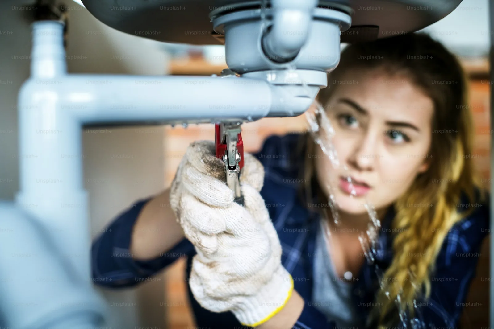

إذا كنت تبحث عن تسليك مجاري في بريدة، فالأفضل تحديد مكان الانسداد والأعراض المصاحبة قبل اختيار الحل. يركز هذا المقال على انسداد الصرف بسبب الدهون وبقايا الطعام، وبالأخص تنظيم استخدام حوض المطبخ. تختلف أسباب الانسداد بين المطبخ والحمام والمرحاض والمصارف الخارجية، لذلك لا توجد طريقة واحدة تناسب جميع الحالات. محور محلي: انسداد الصرف بسبب الدهون وبقايا الطعام استخدام مصفاة والتخلص من الدهون في النفايات.
لاحظ هل المشكلة في مصرف واحد أم في عدة نقاط، وهل يظهر معها بطء أو قرقرة أو رائحة أو رجوع للمياه. هذه التفاصيل لا تثبت السبب وحدها، لكنها تساعد الفني على تحديد نطاق الفحص وتجنب الاكتفاء بحل مؤقت. متى تحتاج إلى فني؟ اطلب مساعدة فنية إذا توقف التصريف تمامًا، أو رجعت المياه من مصرف آخر، أو ظهرت المشكلة في عدة نقاط، أو تكرر الانسداد بعد محاولات بسيطة، أو لاحظت تسربًا أو طفحًا أو رائحة مستمرة.
لا تواصل استخدام المصارف المتأثرة إذا بدأت المياه ترتفع أو تعود إلى الأرضية. الفرق بين الرائحة والانسداد الرائحة وحدها لا تثبت وجود انسداد؛ فقد ترتبط بجفاف السيفون أو التهوية أو خلل في التوصيلات أو تراكم داخل الأنبوب. لاحظ هل تظهر بعد فترة من عدم الاستخدام، وهل تختفي بعد تشغيل الماء، وهل توجد في نقطة واحدة أم عدة نقاط.
شارك هذه التفاصيل مع الفني. خطوات وقاية مرتبطة بـتنظيم استخدام حوض المطبخ استخدام مصفاة والتخلص من الدهون في النفايات. استخدم مصفاة مناسبة للمطبخ والحمام، ونظفها بانتظام، واجمع الدهون بعد أن تبرد في وعاء أو مادة ماصة ثم تخلص منها في النفايات. لا تدفع بقايا الطعام أو المناديل أو الأجسام الصلبة إلى المصارف.
راقب أي تغير في سرعة التصريف وعالج السبب مبكرًا. تشخيص المشكلة قبل اختيار الحل ابدأ بتحديد المصرف الذي يعاني المشكلة: حوض المطبخ، مغسلة الحمام، مصرف الاستحمام، المرحاض أو مصرف خارجي. لاحظ هل المياه تنزل ببطء أم تتوقف تمامًا، وهل يصاحب ذلك صوت قرقرة أو رائحة أو رجوع للمياه. هذه التفاصيل تساعد الفني على تحديد نطاق الفحص، لكنها لا تكفي وحدها لتأكيد السبب.
رصد الأعراض وتحديد موضع المشكلة
علامات تستدعي فحصًا فنيًا اطلب فحصًا إذا توقف التصريف تمامًا، أو عاد الماء من مصرف آخر، أو ظهرت المشكلة في عدة نقاط، أو تكرر الانسداد بعد إزالة المخلفات الظاهرة، أو لاحظت تسربًا أو طفحًا أو رائحة مستمرة. أوقف استخدام المصارف المتأثرة إذا بدأت المياه ترتفع أو ترجع إلى الأرضية، ولا تحاول دفع الانسداد عشوائيًا إلى عمق الأنبوب. كيف تستعد لزيارة الفني؟ حدد المصرف المتأثر، وسجل الأعراض ووقت بدايتها، واذكر أي مواد كيميائية سبق استخدامها.
أبعد الأغراض القابلة للتلف عن منطقة العمل واترك مساحة آمنة للوصول إلى المصرف. لا تفك التوصيلات بنفسك ولا تفتح أغطية ثقيلة. اسأل عن طريقة الفحص، ونطاق العمل، وتكلفة أي خطوة إضافية قبل البدء. أسئلة شائعة هل الرائحة تعني انسدادًا؟ ليس دائمًا؛
فقد ترتبط بالسيفون أو التهوية أو التوصيلات أو تراكم داخل الأنبوب. هل أستخدم مواد كيميائية قوية؟ لا تخلط المواد، ولا تضف منتجًا جديدًا إذا سبق استخدام آخر. اتبع ملصق المنتج واستعن بفني عند عدم وضوح السبب. لماذا يعود الانسداد؟ قد تبقى رواسب أو يوجد خلل في التوصيلات أو خط مشترك أو يستمر دخول الدهون والمخلفات.
متى أتصل بفني؟ عند توقف التصريف أو رجوع المياه أو تأثر عدة مصارف أو تكرار المشكلة. خدمة تسليك مجاري في بريدة إذا كان التصريف بطيئًا أو عاد الانسداد أكثر من مرة، جهّز وصفًا للمشكلة يوضح نوع المصرف والأعراض والنقاط المتأثرة وأي مواد استخدمتها سابقًا. يمكن توضيح طبيعة الحالة ومناقشة نطاق العمل والتوفر عند التواصل. الحل الأكثر فاعلية يبدأ بتحديد السبب، ثم اختيار طريقة مناسبة لحالة الأنابيب، مع الوقاية من الدهون وبقايا الطعام وملاحظة المؤشرات المبكرة.
نصائح سلامة مهمة لا تخلط منظفات المصارف أو الأحماض أو القلويات أو المبيضات مع بعضها؛ فقد تنتج أبخرة خطرة أو حرارة أو تناثر مادة كاوية. إذا سبق وضع مادة كيميائية في المصرف، أخبر الفني باسمها ووقت استخدامها قبل أن يبدأ العمل. لا تستخدم أدوات حادة أو أسلاكًا مرتجلة داخل المصرف؛
فقد تتلف الأنابيب أو تدفع الانسداد إلى مكان أعمق. ولا تفك التوصيلات أو تفتح أغطية غرف التفتيش الثقيلة إذا لم تكن مدربًا على ذلك. إذا ارتفعت المياه أو رجع الصرف إلى الأرضية، أوقف استخدام المصارف المتأثرة وابتعد عن المياه الملوثة. قد تحمل مياه الصرف ملوثات تحتاج إلى تنظيف آمن، لذلك اطلب المساعدة المهنية عند وجود طفح.
خطوات آمنة قبل الاستعانة بفني
تجنب سكب الماء المغلي بصورة عشوائية في جميع أنواع الأنابيب؛ فقد يضر بعض الوصلات أو يسبب حروقًا. اتبع تعليمات الشركة المصنّعة للتركيبات واستعن بفني إذا لم تعرف نوع الأنابيب. إذا كانت المشكلة تشمل عدة مصارف أو ظهر طفح من فتحة أرضية، فقد تكون في خط مشترك أو رئيسي.
لا تكتفِ بالحلول المنزلية، واطلب فحصًا لتحديد نطاق المشكلة. بعد التسليك، اسأل عن سبب الانسداد وما إذا كانت هناك توصيات لتقليل تكراره. إذا ظهرت تسربات أو أصوات غير معتادة أو عاد البطء سريعًا، اطلب مراجعة بدل تكرار المواد الكيميائية. مثال تطبيقي مثال عملي: تتكرر مشكلة حوض المطبخ بسبب بقايا الطعام والدهون.
تضع الأسرة مصفاة وتجمع الدهون في وعاء للنفايات، وتراقب سرعة التصريف. إذا لم تتحسن الحالة، يكون الفحص الفني الخطوة التالية بدل زيادة كمية المنظفات. حتى المواد التي تبدو قابلة للتفتت قد تتجمع وتساهم في الانسداد، خصوصًا إذا تكررت الكميات أو كانت الشبكة تعاني مشكلة سابقة. وتساعد هذه الخطوة على تقليل فرص تكرار المشكلة دون الاعتماد على مواد كيميائية عشوائية.
إذا بقي تجمع الماء أو كان الانسداد عميقًا، استعن بفني بدل دفع المخلفات إلى داخل الخط. تشغيل المياه بالطريقة المعتادة قد يساعد في بعض الحالات المرتبطة بجفاف السيفون، لكن استمرار الرائحة يتطلب فحصًا بدل إخفائها بالمعطرات. هذه المعلومات تساعد الفني على معرفة إن كانت المشكلة في النقطة نفسها أو أن نطاقها تغير. لا تدخل يدك في فتحة مجهولة ولا تدفع المخلفات إلى داخل الأنبوب.
إذا استمر البطء بعد التنظيف البسيط، توقف عن التجارب المتكررة واطلب تقييمًا فنيًا. الدهون قد تبرد داخل الأنابيب وتلتقط بقايا أخرى، ما يزيد احتمال تراكم الرواسب.
هذا دليل توعوي عام ولا يؤكد توافر الخدمة أو تغطيتها في المدينة. اتبع تعليمات السلامة ودليل الشركة المصنّعة، واستفسر عن النطاق قبل الحجز.